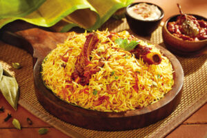

Home
Biriyani

Biryani is a mixed rice dish originating in South Asia , made with rice, meat or seafood, and spices. To cater to vegetarians, the meat or seafood can be substituted with vegetables or paneer. Sometimes eggs or potatoes are also added.
Incredients
INGREDIENT – To serve 4 persons
- Chicken or mutton 500 g
- Basmathi Rice 500 g
- Oil 40 ml
- Ginger Garlic Paste 30 g
- Onion 2 no
- Tamato 2 no
- Mint Leaves 18 g
- Coriander Leaves 18 g
- Curd 30 g
- Lime 1 no
- Salt To Taste
- Water 2.5 lt
- Melam Ambur Biriyani Masala 2 tbsp
Cooking Method
- Soak Melam Ambur Biriyani Masala (2 – 2 ½ tbsp) with 50 – 60 ml of water and make into paste.
- Keep aside for 15 mins and then grind into finer paste.
- Wash and soak the Basmathi Rice (500 g) in water. Set aside.
- Heat 3 tbsp of oil in a pan.
- Add chopped onions (2 nos) and sauté till onion becomes soft.
- Add 1 tbsp of curd and fry for 10 seconds.
- Add 30g ginger and garlic paste. Fry for 4-6 minutes on medium flame until the raw smell of ginger and garlic goes off.
- Add 2 nos of chopped tomatoes. (Optional – Add slit green chillies (2 nos) after adding tomatoes).
- Add Melam Ambur Biriyani Masala to Chicken / Mutton (500g)
- Add mint leaves (18g)
- Add coriander leaves (18g)
- Add salt
- Add 20g of curd
- Add lime juice (1 lime).
- Add water 2 cups.
- Mix well to combine.
- Cover and cook slowly on medium flame until chicken / mutton is cooked.
- Bring 2 litres of water to boil in another vessel and add the soaked rice.
- Add the salt and cook until the rice is half done.
- Drain the water and add the rice to the chicken / mutton pan. Mix well to combine.
- Add 1 tbsp Ghee on the top of the contents.
- Dum cook on low flame for 15 minutes.
- Once the dum cooking is over, open the lid and gently fluff up the rice to mix.
- Serve Chicken / Mutton Biriyani hot with raitha. It can also be served with Dalcha.